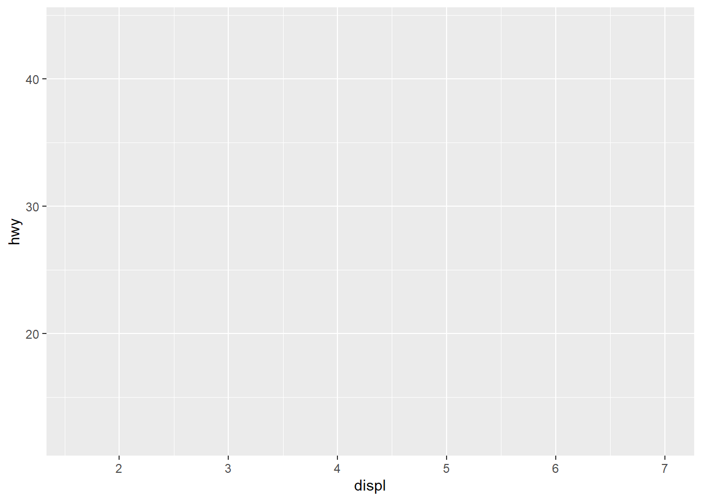
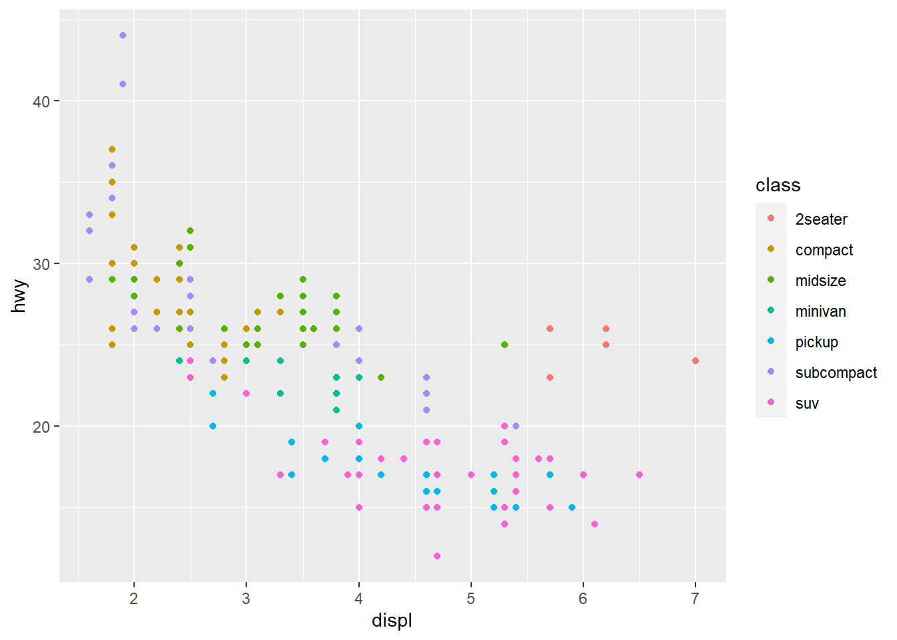
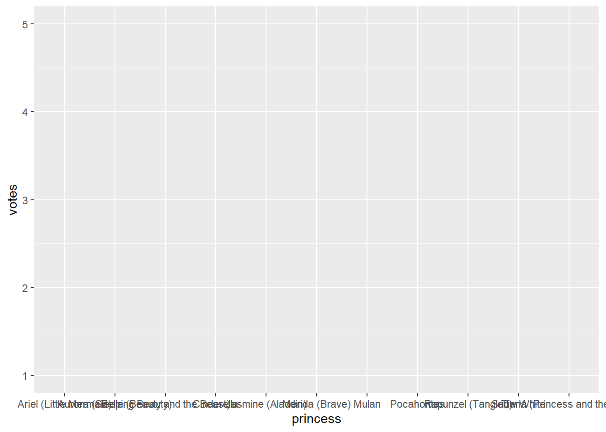
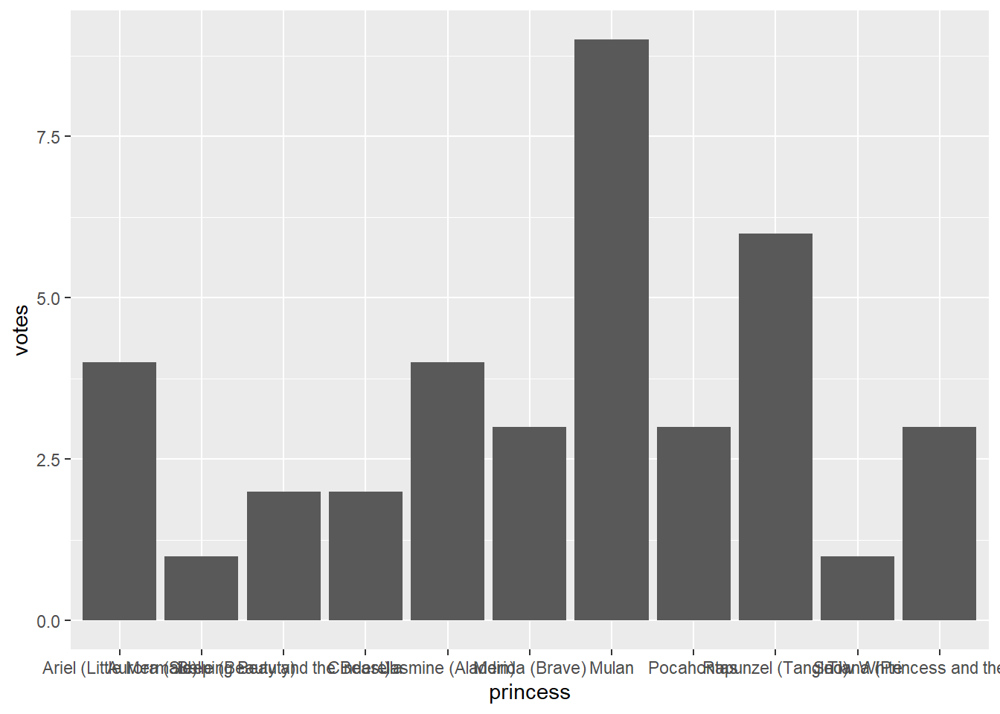
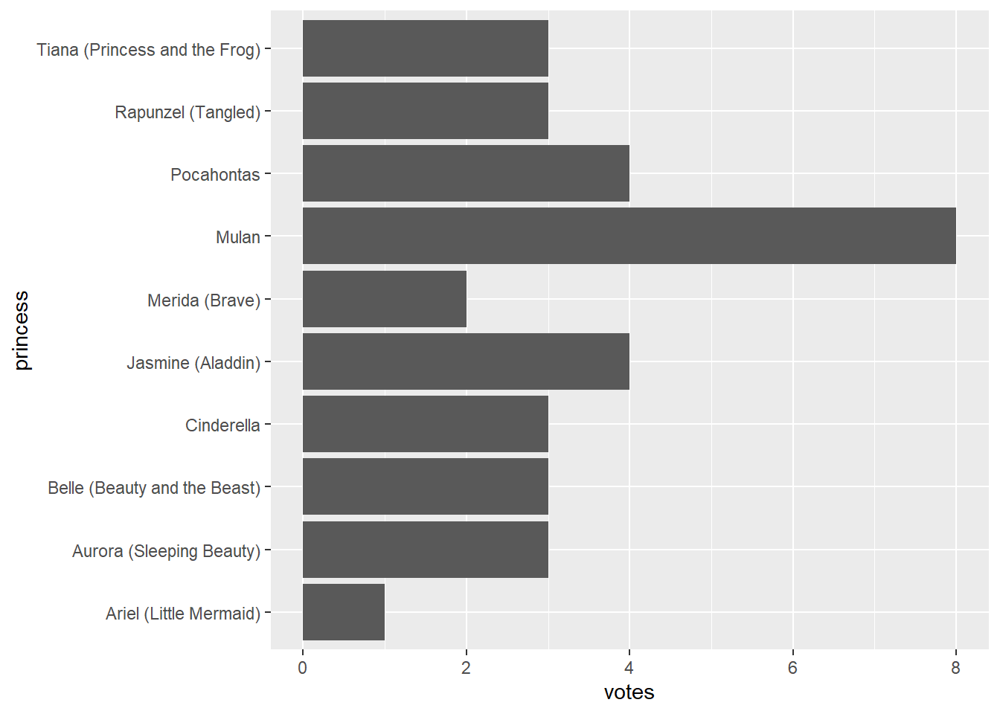
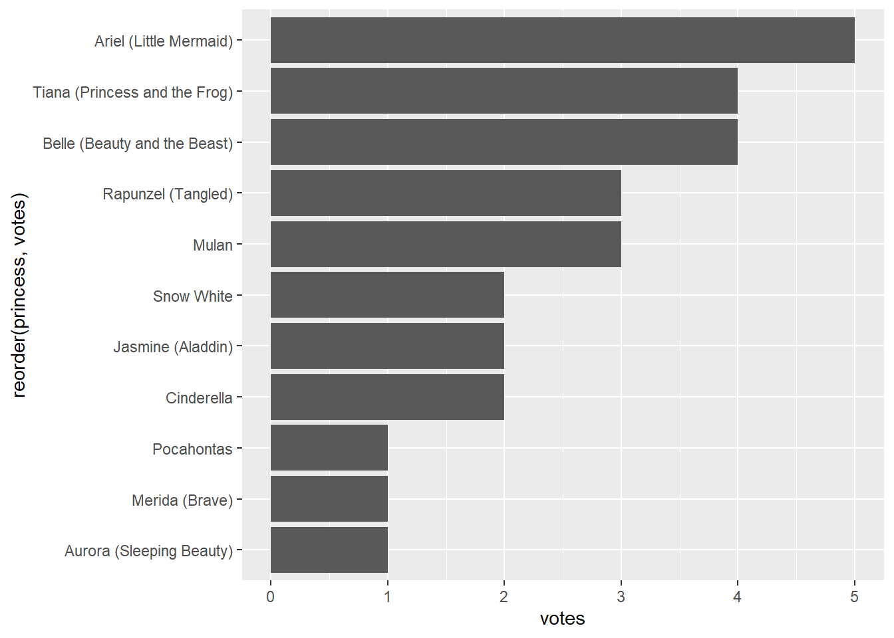
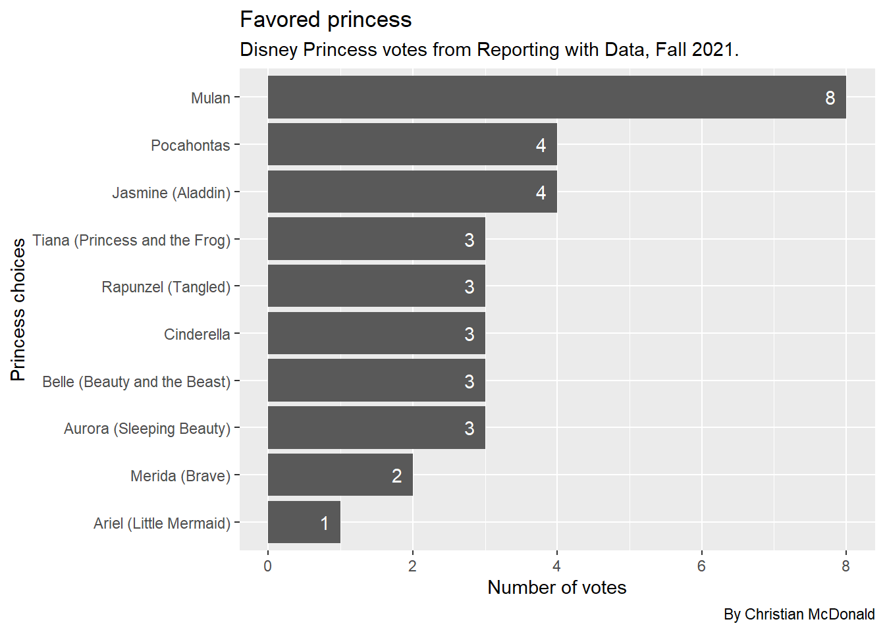

Chapter 7 Intro to ggplot
7.1 Goals for this section
- An introduction to the Grammar of Graphics
- We’ll make charts!
7.2 Introduction to ggplot
ggplot2 is the data visualization library within Hadley Wickham’s tidyverse. It uses a concept called the Grammar of Graphics, the idea that you can build every graph from the same components: a data set, a coordinate system, and geoms – the visual marks that represent data points.
Even though the package is called ggplot2, the function to make graphs is just ggplot(). I will often just call everything ggplot.
7.2.1 What I like/dislike about ggplot
The ggplot system allows you to display data right in your notebook. It is really good at helping you find important things in your data that can inform reporting. It’s an important tool in your R-based data journalism toolkit.
What ggplot is less good at is creating publishable graphics. Don’t get me wrong … you can do it, but nuances of the ggplot system take time to master at that level. There are other tools (like Datawrapper and Flourish) that can do that better, even without code. That said, there is a place for R in that workflow, too. We’ll cover using Datawrapper in a later chapter.
7.2.2 The Grammar of Graphics
ggplot uses this concept of the Grammar of Graphics … i.e., that you can use code to describe how to build a chart layer-by-layer.
With a hat tip to Matt Waite, we can describe the components of the Grammar of Graphics as:
- data: which data you are pulling from for the chart.
- aesthetics: describes how to apply specific data to the plot. What is on x axis, what is on y axis, for starters.
- geometries: the shape the data is going to take on the graph. lines, columns, points.
- scales: any transformations we might make on the data.
- layers: how we might layer multiple geometries over top of each other to reveal new information.
- facets: how we might graph many elements of the same data set in the same space.
What to remember here is this: for every graphic we start with the data, and then we build a chart from it one “layer” at a time.
The best way to learn this system is to do it and explain along the way.
7.3 Start a new project
- Get into RStudio and make sure you don’t have any other files or projects open.
- Create a new project, name it
yourname-ggplotand save it in your rwd folder. - No need to create our folder structure … we won’t need it here.
- Start a new RMarkdown notebook and save it as
01-intro-ggplot.Rmd. - Remove the boilerplate and create a setup section that loads
library(tidyverse), like we do with every notebook.
7.4 The layers of ggplot
Much of this first plot explanation comes from Hadley Wickham’s R for Data Science, with edits to fit the lesson here.
We’re going to use a data set that is part of the tidyverse to explore how ggplot works.
- Start a new section “First plot” and add a code chunk.
- Add the code below and run it to see what the mpg dataset looks like.
mpg## # A tibble: 234 × 11
## manufacturer model displ year cyl trans drv cty hwy fl class
## <chr> <chr> <dbl> <int> <int> <chr> <chr> <int> <int> <chr> <chr>
## 1 audi a4 1.8 1999 4 auto… f 18 29 p comp…
## 2 audi a4 1.8 1999 4 manu… f 21 29 p comp…
## 3 audi a4 2 2008 4 manu… f 20 31 p comp…
## 4 audi a4 2 2008 4 auto… f 21 30 p comp…
## 5 audi a4 2.8 1999 6 auto… f 16 26 p comp…
## 6 audi a4 2.8 1999 6 manu… f 18 26 p comp…
## 7 audi a4 3.1 2008 6 auto… f 18 27 p comp…
## 8 audi a4 quattro 1.8 1999 4 manu… 4 18 26 p comp…
## 9 audi a4 quattro 1.8 1999 4 auto… 4 16 25 p comp…
## 10 audi a4 quattro 2 2008 4 manu… 4 20 28 p comp…
## # … with 224 more rowsThe mpg data contains observations collected by the US Environmental Protection Agency on 38 models of cars. It’s a data set embedded into the tidyverse for lessons like this one.
Among the variables in mpg are:
displ, a car’s engine size, in liters.hwy, a car’s fuel efficiency on the highway, in miles per gallon (mpg).
With these two variables we can test the theory that cars with smaller engines (displ) get better gas mileage (hwy).
7.4.1 Build the base layer
With ggplot2, you begin a plot with the functionggplot(). ggplot() creates a coordinate system that you can add layers to. The first argument for ggplot() is the data set to use in the graph So ggplot(mpg) creates an empty graph with no axes or anything.
You complete your graph by adding one or more layers to ggplot(). The function geom_point() adds a layer of points to your plot, which creates a scatterplot. ggplot2 comes with many geom functions that each add a different type of layer to a plot.
Each geom function in ggplot2 takes a mapping argument. This defines how variables in your dataset are mapped to visual properties. The mapping argument is always paired with aes(), and the x and y arguments of aes() specify which variables to map to the x and y axes. ggplot2 looks for the mapped variables in the data argument, in this case, mpg.
We can apply aes() mappings to the graph as a whole and/or to the individual geom layers.
Frankly, it is easier to show this than explain it. The code below sets up the grid and axes lines, but it hasn’t placed any data on the plot.
Do this:
- Add some text that you are building the mpg chart.
- Add the code chunk below and run it.
ggplot(mpg, aes(x = displ, y = hwy))
Let’s work through the code above:
ggplot()is our function to make a chart.- The first argument
ggplot()needs is the data. It could be specified asdata = mpgbut we don’t need thedata =part as it is always the first item specified inside of (or piped into)ggplot() - Next is the aesthetics or
aes(). This is where tell ggplot what data to plot on thexandyaxis. You might see this asmapping = aes(<VALUES>)but we can often get by without themapping =part.
In our case we are applying these aes() to the entire chart. You’ll see later we can also apply different aes() to specific geoms.
7.4.2 Layers can we add to our plots
We’ll now add onto this base layer a number of things:
- geometries (or geoms as we call them) are the way we plot data on the base grid. There are many geoms, but here are a few common ones:
geom_points()adds dots onto the grid based on the data. Will will use these here to build a scatterplot graph.geom_line()adds lines between data points on the grid. Basically a line chart.geom_col()andgeom_bars()adds bars to the grid based on values in the data. A bar chart. We’ll usegeom_col()later in this lesson but you can read about the difference between the two in a later chapter.geom_text()adds labels based on values in the data.
- labels (or labs, since we use the
labs()function for them) are a series of text-based items we can layer onto our plots like titles, bylines and axis names. - themes change the visual styles of the grids and axis. There are several available within ggplot and many other from the R community.
We add layers onto the chart using the + at the end of a line. Think of the + as the %>% of ggplot.
7.4.3 Add geom_points
- EDIT your plot chunk to add the
+and a new line forgeom_point()
ggplot(mpg, aes(x = displ, y = hwy)) + # don't forget the + at the end of this line
geom_point() # the geom_point
The geom_point() function above is inheriting the aes() values from the line above it.
7.4.4 Adding other mappings
We can add aesthetics to either the plot as a whole (which we did with the x and y values above) and those will apply to all the geoms unless overwritten.
But we can also add aesthetics to specific geoms. We’ll demonstrate this below.
- Edit your
geom_point()function to add a color mapping to the points withaes(color = class).coloris the type of aesthetic, andclassis a column in the data.
ggplot(mpg, aes(x = displ, y = hwy)) +
geom_point(aes(color = class)) # this is the line you are editing
As you can see, the dots were given colors based on the values in the class column, and ggplot also added a legend to the graphic.
There are other aesthetics you can use.
- Change the
coloraesthetic to one of these values and run it to see how it affects the chart:alpha,sizeandshape. (i.e.,alpha = class.) - Once you’ve tried them, change it back to
color.
OK, enough of the basics … let’s build a chart you might care about.
7.5 Let’s build a bar chart
We’ll build some charts from our first-day survey where you told me your favorite Disney Princess and favored flavor of ice cream.
We aren’t going to create different notebooks or download the data to to your computer … we’re just doing to save it directly into a tibble.
- Start a new section: Princess preference chart.
- Use text to note that we’ll use class data to build a chart.
- Add the code below to get the data.
# read the data and fill the tibble: class
class <- read_csv("https://docs.google.com/spreadsheets/d/e/2PACX-1vRnSAx9eBoOGdZ3pMLZ2XhrBlgl56BeycxJwdTofmgfTBTZ7A1-LMuBxAI094aAZnCmeThPNXaU-xro/pub?gid=1648328850&single=true&output=csv")## Rows: 34 Columns: 3## ── Column specification ────────────────────────────────────────────────────────
## Delimiter: ","
## chr (3): name, princess, ice_cream##
## ℹ Use `spec()` to retrieve the full column specification for this data.
## ℹ Specify the column types or set `show_col_types = FALSE` to quiet this message.# peek at the data
class## # A tibble: 34 × 3
## name princess ice_cream
## <chr> <chr> <chr>
## 1 Addie Rapunzel (Tangled) Cookie Dough
## 2 Aisling Pocahontas Mint Chocolate Chip
## 3 Alexis Jasmine (Aladdin) Cookie Dough
## 4 Ana Belle (Beauty and the Beast) Cookies and Cream
## 5 Andreana Mulan Strawberry
## 6 Angelica Tiana (Princess and the Frog) Strawberry
## 7 Ariana Merida (Brave) Coffee/Jamoca
## 8 Cecilia Cinderella Mint Chocolate Chip
## 9 Chandle Jasmine (Aladdin) Cookie Dough
## 10 Chris Cinderella Cookie Dough
## # … with 24 more rows7.5.1 Prepare the data
While there are ways for ggplot to calculate values from your data on the fly, I much prefer to first build a table of the values I want plotted on a chart.
Our goal here is to make a bar (or column) chart showing the number of votes for each princess from the data. So, we need to count the number of rows for each value … our typical group_by/summarize/arrange process. I’m going to use the count() shortcut for our GSA here since we haven’t used it much lately. I’m saving the summarized data into a new dataframe called princess_data. Follow along in your notebook:
- Add a new section: Princess chart
- Add text that you are creating a data frame to plot.
- Add the code below to create that data.
princess_data <- class %>%
count(princess, name = "votes", sort = TRUE)
# this above line counts the princess rows, sets the name and sorts
# peek at the data
princess_data## # A tibble: 10 × 2
## princess votes
## <chr> <int>
## 1 Mulan 8
## 2 Jasmine (Aladdin) 4
## 3 Pocahontas 4
## 4 Aurora (Sleeping Beauty) 3
## 5 Belle (Beauty and the Beast) 3
## 6 Cinderella 3
## 7 Rapunzel (Tangled) 3
## 8 Tiana (Princess and the Frog) 3
## 9 Merida (Brave) 2
## 10 Ariel (Little Mermaid) 1I hope you understand what we’ve done here. We’re counting the number of rows for each princess.
7.5.2 Build our plot with geom_col
Our first goal is to build the first layer the plot … basically tell ggplot what data we are using so it will build the grid to hold our plots.
- Add some text noting that you’ll now plot.
- Add the following code chunk that starts the plot and run it.
ggplot(princess_data, aes(x = princess, y = votes)) # sets our x and y axes
You’ll see the grid and x/y axis of the data, but no geometries are applied yet. Don’t worry yet now it looks … we’ll get there.
7.5.3 Add the geom_col layer
Now it is time to add our columns.
- Edit the plot code to add the ggplot pipe
+and on the next line addgeom_col().
ggplot(princess_data, aes(x = princess, y = votes)) + # don't forget the + on this line
geom_col() # adds the bars
This added our data to the plot, though there are a couple of issues:
- We can’t read the value names. We can fix this.
- The order of the bars is alphabetical instead of in vote order. Again, we can fix it.
7.5.4 Flip the axis
We can “flip” the axis to turn it sideways to read the labels. This can be a bit confusing later because the “x” axis is now going up/down.
- Edit your plot chunk to add the ggplot pipe
+andcoord_flip()on the next line.
ggplot(princess_data, aes(x = princess, y = votes)) +
geom_col() + # don't forget the +
coord_flip() # flips the axis
7.5.5 Reorder the bars
The bars on our chart are in alphabetical order of the x axis (and reversed thanks to our flip.) We want to order the values based on the votes in the data.
Complication alert: Categorical data can have factors, which are like an internal ordering system. Some categories, like months in a year, have an “order” that is not alphabetical.
We can reorder our categorical values in a plot by editing the x values in our aes() using reorder(). (There is a tidyverse function called fct_reorder() that works the same way.
reorder() takes two arguments: The column to reorder, and the column to base that reorder on. It can happen in two different ways, and I’ll be honest and say I don’t know which is easier to comprehend.
x = reorder(princess, votes)says "set the x axis asprincess, but order asvotes. OR …x = princess %>% reorder(votes)says "set the x axis asprincessand then reorder byvotes.
They both work. Even though I’m a fan of the tidyverse %>% construct, I’m going with the first version.
- Edit your chunk to reorder the bars.
ggplot(princess_data, aes(x = reorder(princess, votes), y = votes)) + # this is the line you edit
geom_col() +
coord_flip()
7.5.6 Add some titles, labels
Now we’ll add a layer of labels to our chart using the the labs() function. You’ll see we can add and change a number of things with labs().
- To add the labels to the bars, we use a
geom_text()because we are actually plotting them on the graph. The example below also changes the color of the text and moves the labels to inside the bar withhjust(or horizontal justification.vjustwould move it up and down). - The
labs()function allows for labels “around” the chart. These are some standard values used.
ggplot(princess_data, aes(x = reorder(princess, votes), y = votes)) +
geom_col() +
coord_flip() + # don't forget +
geom_text(aes(label = votes), hjust = 2, color = "white") + # plots votes text values on chart
# labs below has several settings
labs(
title = "Favored princess", # adds a title
subtitle = "Disney Princess votes from Reporting with Data, Fall 2021.", # adds a subtitle
caption = "By Christian McDonald", # adds the byline
x = "Princess choices", # renames the x axis label (which is really y since it is flipped)
y = "Number of votes" # renames the y axis label (which is really x since it is flipped)
)
There you go! You’ve made a chart showing how our classes rated Disney Princesses.
7.6 On your own: Ice cream!
Now it is time for you to put these skills to work:
- Build a chart about the favorite ice creams from RWD classes.
Some things to consider:
- You need a new section, etc.
- You’re starting with the same
classdata - You need to prepare the data based on
ice_cream - You need to build the chart
It’s essentially the same process we used for the princess chart, but using ice_cream variable.
7.7 What we’ve learned
There is a ton, really.
- ggplot2 (which is really the
ggplot()function) is the charting library for the tidyverse. This whole lesson was about it.
Here are some more references for ggplot:
- The ggplot2 documentation and ggplot2 cheatsheets.
- R for Data Science, Chap 3. Hadley Wickam dives right into plots in his book.
- R Graphics Cookbook has lots of example plots. Good to harvest code and see how to do things.
- The R Graph Gallery another place to see examples.